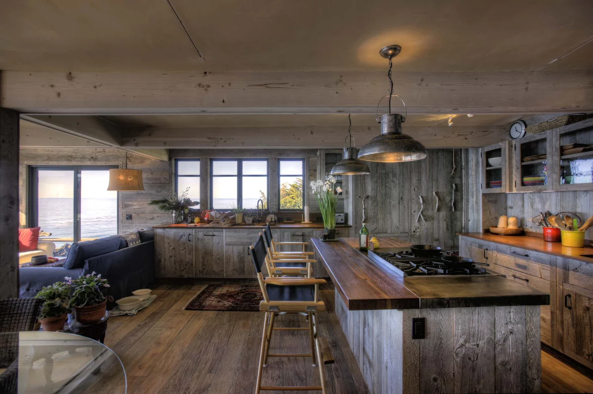

Для перемещением между слайдами следует пользоваться клавишами
<Space><Left>
и <Right>.
Для включения субтитров, используйте клавишу <D>
Конец слайда, для продолжения нажмите <Space>
Заголовок слайда. Reveal.JS.
Презентация доступна:
в любом современном браузере;
на компьютере, смартфоне, планшете, смарт тв;
как онлайн, так и оффлайн (кроме перевода, голосового управления, режима конференции).
Конец слайда, для продолжения нажмите <Space>
Заголовок слайда. Режим конференции.
При временной нетрудоспособности или нахождения в труднодоступном месте можно организовать конференцию
и транслировать содержимое презентации в режиме онлайн. А при наличии микрофона и вебкамеры можно
организовать живое общение между теми, кто находится в аудитории и теми, кто находится дома.
Данный функционал находится в разработке
Конец слайда, для продолжения нажмите <Space>
Заголовок слайда. Режим конференции.
При проблемах со слухом можно создавать комментарии, которые человек может
посмотреть дополнительно.
Для запуска нажмите на <D> или первую кнопку внизу экрана.
Конец слайда, для продолжения нажмите <Space>
Заголовок слайда. Перевод.
Иноязычные люди при наличии непонятных слов могут произвести машинный
перевод с помощью виджета снизу и данная презентация будет доступна и им.
Для запуска воспользуйтесь кнопкой ниже.
Конец слайда, для продолжения нажмите <Space>
Заголовок слайда. Школьная доска.
При запуске презентации на интерактивной доске, можно перевести её в режим
школьной доски и делать заметки прямо на слайде.
Для запуска нажмите на <B> или вторую кнопку внизу экрана.
Конец слайда, для продолжения нажмите <Space>
Заголовок слайда. Экспорт в PDF.
При необходимости можно с легкостью сохранить презентацию для печати
(в том числе в PDF, через виртуальный принтер).
С помощью простого языка Markdown самые простые презентации может собрать любой незрячий.
### Список городов Удмуртии и известные люди
- Ижевск - **М.Т. Калашников**
- Сарапул - **Н.А. Дурова**
- Глазов - **О.Л. Книппер-Чехова**
- Воткинск - **П.И. Чайковский**
- Можга
- Камбарка
Конец слайда, для продолжения нажмите <Space>
Заголовок слайда. Голосовое управление.
С помощью Yandex Speechkit Cloud можно организовать переключение слайдов и управление
интерактивными элементами, а с помощью языка markdown и создавать саму презентацию голосом.
Интеграция с данным сервисом находится в разработке
Конец слайда, для продолжения нажмите <Space>
Заголовок слайда. Математика.
Библиотека katex позволяет вставлять формулы любой сложности.
Общий вид квадратного уравнения: а икс в квадрате плюс б икс плюс ц равно нулю$ax^2+bx+c=0$
Решение уравнения: нахождение его корней или доказательства их отсутствия.
Конец слайда, для продолжения нажмите <Space>
Заголовок слайда. Математика.
Алгоритм нахождения корней:
Находим дискриминант: дискриминант равен бе в квадрате минус четыре а це.$D = b^2-4ac$
Находим корни:
$$
\begin{cases}
x_{1,2}=\dfrac{-b\pm\sqrt{D}}{2a} &, \text{если } D > 0 \\
x=\dfrac{-b}{2a} &, \text{если } D = 0 \\
\text{Корней нет} &, \text{если } D < 0
\end {cases}
$$
икс первое и второе равно дроби, в числителе минус б плюс минус корень из дискриминанта, в знаменателе два а, при условии, что дискриминант положительныйикс равен минус б деленное на два а, при условии, что дискриминант равен нулюкорней нет, при условии, что дискриминант отрицательный
Конец слайда, для продолжения нажмите <Space>
Заголовок слайда. Русский язык.
Различные визуальные элементы имеют текстовое описание для скринридеров.
Что изображено на картинке можно описать вручную или воспользоваться
результатом работы Yandex Vision .

Скринридер прочитает для незрячего: "По мнению Яндекса здесь изображено: кухня лофт кантри, интерьер в стиле лофт деревянный
домосвещение на кухне лофт, rustic kitchen, кухня в стиле лофт", при этом этот текст прочитан не будет.
Слайд с изображением. По мнению Яндекса здесь изображено: кухня лофт кантри, интерьер в стиле лофт деревянный
домосвещение на кухне лофт, rustic kitchen, кухня в стиле лофтКонец презентации, спасибо за внимание.